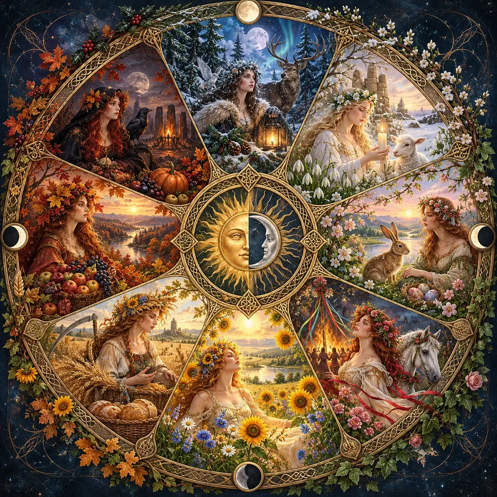

Click or tap any painted sector to open its full original illustration and details.
Eight sabbats · four seasons · one ever-turning cycle of nature. Select a painted sector to explore its story.
The eightfold Wheel is a modern Pagan calendar inspired by older and newer seasonal traditions. Lesser Sabbats follow the solstices and equinoxes; Greater Sabbats use conventional festival dates. Astronomical dates reflect your device’s time zone.

Click or tap any painted sector to open its full original illustration and details.